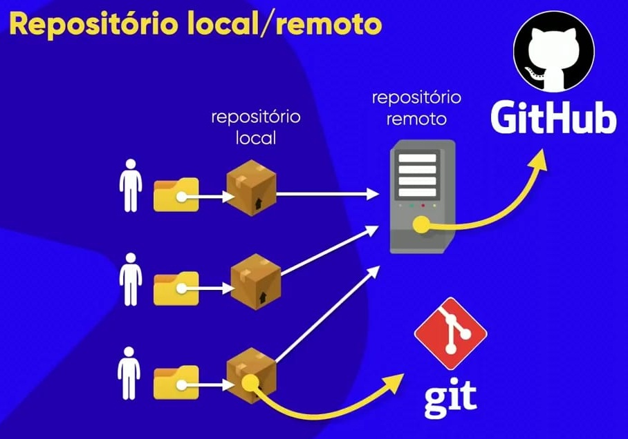
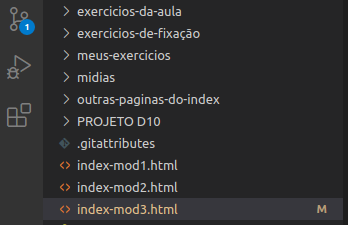
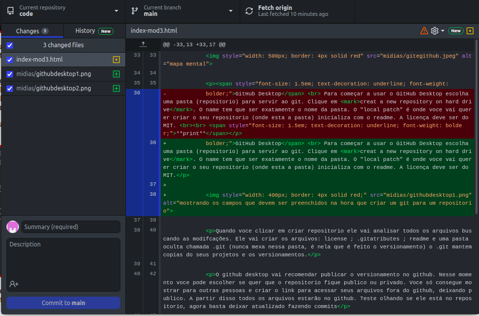

Curso de HTML e CSS Modulo 3
Git e GitHub
Git
Git é um sistema de controle de versionamento e serve para registrar o historico de edições de qualquer tipo de arquivo.
O gerenciador de versão serve para guardar todas as versões de arquivos que foram modificados. Ele vai manter versões do seu codigo no seu computador.
Nesse curso não será ensinado a usar a ferramenta git de forma completa. Se tiver interesse em aprender, basta acessar o curso completo Curso de Git Completo
GitHub
No entanto e se o hardware der algum problema você perde todos os seus arquivos versionados? Ou se você quer mostrar seu site para alguem? Precisará hospedar em nuvem o versionamento, no caso o GitHub. O git vai fazer o versionamento no seu computador, enquanto o GitHub vai hospedar o versionamento na nuvem.
O repositorio é um local onde se guarda coisas ➡ É o local onde ficará o versionamento feito pelo git.
Enquanto o repositorio remoto é o GitHub. O GitHub é como se fosse um backup do seu repositorio
O GitHub permite trabalhar em equipe, cada um atualiza o seu repositorio local e quando quiser manda para o repositorio remoto.
Quando se manda do repositorio local para o remoto, se está fazendo um PUSH
- Repositorio Local - local onde estarão os versionamentos
- Repositorio Remoto - local em que ficará hospedado (nuvem)

GitHub Desktop
Para começar a usar o GitHub Desktop escolha uma pasta (repositorio) para servir ao git. Clique em creat a new repository on hard drive. O name tem que ser exatamente o nome da pasta. O "local patch" é onde voce vai querer criar o seu repositorio (onde esta a pasta) inicializa com o readme. A licença deve ser do MIT.
Quando voce clicar em criar repositorio ele vai analisar todos os arquivos buscando as modifcações. Ele vai criar os arquivos: license ; .gitatributes ; readme e uma pasta oculta chamada .git (nunca mexa nessa pasta, é nela que é feito o versionamento) o .git mantem copias do seus projetos e os versionamentos.
O github desktop vai recomendar publicar o versionamento no github. Nesse momento voce pode escolher se quer que o repositorio fique publico ou privado. Voce só consegue mostrar para outras pessoas e criar o link para acessar seus arquivos fora do github, deixando publico. A partir disso todos os arquivos estarão no github. Teste olhando se ele está no repositorio, agora basta deixar atualizado fazendo commits
Quando for feita uma alteração, o VSCode vai ficar com "1" em baixo da lupa (isso significa que ha uma alteração), tambem aparece um "M" ao lado do nome do arquivo que quer dizer "modificado".
O commit faz a atualização do repositorio local. Para mandar a atualização para o github, no github desktop, clique em push "origin". Basta entrar no github e ver a atualização
Interface do GitHub Desktop
